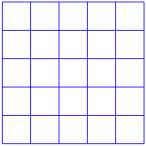

Activity 1.5.1.
Work in groups
- Draw a grid of squares like the one shown below.
- Start by counting all the smallest squares \((1 \times 1)\) in the grid.
- Then, identify and count all the larger squares, such as \(2 \times 2, \,\,\) \(3 \times 3\text{,}\) and so on, until you reach the largest square that fits within the grid.
- Write down the number of squares for each size \((e.g., 1 \times 1, \,\, 2 \times 2, ...) \) in a table for better organization. Add them up to find the total number of squares in the grid.
- Discuss your findings with a in a small group. Compare how many squares each of you found and check for any missed squares.
- Think about the process you used to count the squares. Could there be a quicker way to calculate the total number of squares without counting each one individually?
